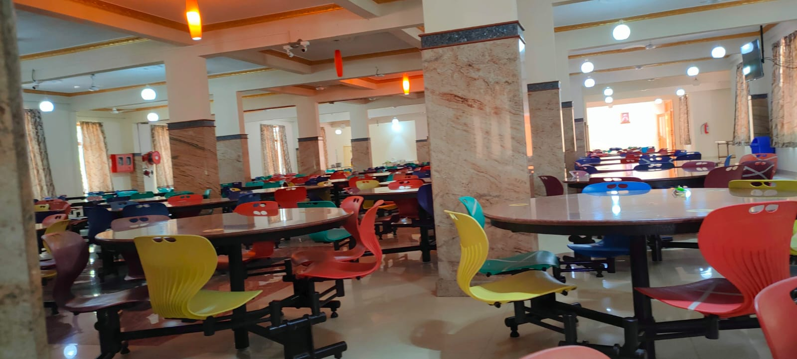
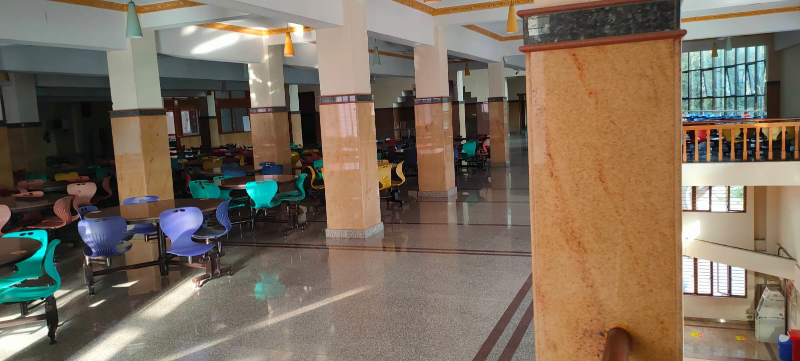

Christ Canteens
About US
Info
Canteen List
South Canteen
North Canteen

North Canteen
This canteen is located near "devdan hall", It have varity of north and south thalis. And you will get all type veg foods.

South Canteen
This canteen is located in 4th block. And is very famouse for its fast food varity. You will get veg as well as nonveg meals also.
Welcome to Three Canteens, where you can order food from any of our three canteens.